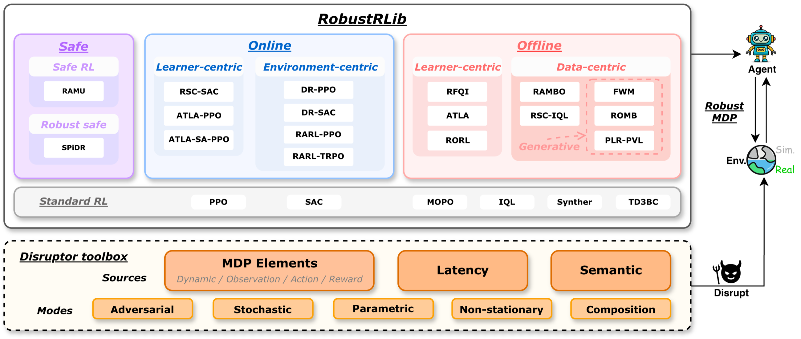
Robust reinforcement learning (RL) is critical for reliable real-world deployment, where policies may fail under diverse shifts and disruptions. Existing robust RL algorithms offer a rich set of mechanisms and principles, yet two major barriers limit their broader potential: limited algorithm reusability and an unclear empirical capability boundary. We introduce RobustRLlib, an algorithm-centric library and benchmark that addresses both challenges. It integrates 16 representative robust online, offline, and safe RL methods under a unified interface for substantially improved reusability, together with an enhanced evaluation platform spanning diverse real-world shifts and advanced humanoid and vision–language–action tasks. Systematic evaluation provides an up-to-date capability map of current robust RL algorithms, revealing where they remain effective and where substantial robustness gaps persist. As an open-source, user-friendly platform, RobustRLlib offers a reproducible and extensible codebase for applying existing methods to new problems and developing new robust RL algorithms.
Robust RL has produced many mechanisms, but each is developed, trained and reported inside its own setting. RobustRLlib fixes the unit of comparison at the algorithm rather than adding another task suite.
Robust RL methods are fragmented across separate implementations and training pipelines. There is no single interface through which a practitioner can try a broad collection of robust methods on a new application, and no shared place to build the next one.
Methods are reported under different tasks, budgets and shift definitions — sometimes under the very perturbation their mechanism targets. A reported gain therefore cannot be separated from the setup that produced it, and it is unclear whether a method withstands the shift it claims to address.
Sixteen representative robust online, offline and safe RL methods in one reusable codebase, organised by learning mechanism, intended shift target and base algorithm.
An extensible disruptor toolbox covering MDP-element shifts plus control-loop latency and task semantics, with stochastic, adversarial, parametric and non-stationary modes that compose — and the same interface carried onto Isaac Lab and VLA tasks.
A unified, shift-isolated evaluation of the whole library on four task families and four severity quartiles, connecting each mechanism to its measured strengths and failure modes.
RobustRLlib is organised around algorithm attribution: every method records how it changes learning, which shift it claims to address, and which base algorithm realises it. Three tracks — offline, online and safe — split further by the route robustness enters through.
| Regime | Family | Method | Shifted data | Generative model | Extra network | Claimed robustness | Base algorithm |
|---|---|---|---|---|---|---|---|
| Robust Offline — learns from a fixed dataset without environment interaction | |||||||
| Robust Offline | Learner-centric | RFQI | — | Dynamic | FQI | ||
| RORL | — | Observation | SAC | ||||
| ATLA | — | ✓ | Observation | IQL | |||
| Data-centric | RSC-IQL | — | ✓ | Semantics | IQL | ||
| RAMBO | — | ✓ | Dynamic | SAC | |||
| ROMB | — | ✓ | ✓ | Dynamic | IQL | ||
| FWM | — | ✓ | ✓ | Dynamic | IQL | ||
| PLR-PVL | — | ✓ | ✓ | Dynamic | IQL | ||
| Robust Online — learns through continued environment interaction | |||||||
| Robust Online | Learner-centric | ATLA | ✓ | — | ✓ | Observation | PPO |
| ATLA-SA | ✓ | — | ✓ | Observation | PPO | ||
| RSC | ✓ | — | ✓ | Semantics | SAC | ||
| Environment-centric | RARL | ✓ | — | ✓ | Dynamic | PPO / TRPO | |
| DR | ✓ | — | Dynamic | SAC | |||
| Robust Safe — adds cost constraints, including robust-safe methods implemented in the online setting | |||||||
| Robust Safe | Robust Safe | RAMU | ✓ | — | Dynamic | PPO | |
| SPiDR | ✓ | — | ✓ | Dynamic | PPO | ||
Structural comparison of the robust methods in the library. Shifted data indicates whether the algorithm can obtain access to a shifted environment; generative model marks methods that explicitly learn a distribution over transitions or future trajectories; extra network marks methods that train an additional adversary or transition model; claimed robustness records the intended shift target. Standard references (PPO, TRPO, SAC, IQL, TD3+BC, MOPO, SynthER) are excluded from the table.
Preserving native training configurations while standardising evaluation gives two complementary levels of comparison. A unified post-training benchmark evaluates all eligible algorithms on a common task and perturbation grid to measure robustness breadth; an algorithm-specific benchmark evaluates each method against the baselines targeted by its robustness mechanism to reveal specialisation.
| Benchmark | Robust algorithms | MDP shifts | Latency | Semantic | Compound | Task expansion |
|---|---|---|---|---|---|---|
| RLlib | 0 | 0/4 | ✗ | ✗ | ✗ | ✓ |
| RRLS | 4 | 1/4 | ✗ | ✗ | ◐ | ◐ |
| ODRL | 0 | 1/4 | ✗ | ✗ | ✗ | ✗ |
| Robust-Gymnasium | 4 | 4/4 | ✗ | ✓ | ✓ | ✓ |
| RWRL Suite | 0 | 3/4 | ✓ | ✗ | ✓ | ✗ |
| RoAd-RL | 0 | 1/4 | ✗ | ✗ | ✗ | ✓ |
| RobustRLlib (ours) | 16 | 4/4 | ✓ | ✓ | ✓ | ✓ |
Comparison with related RL libraries and robustness benchmarks. Robust algorithms counts robust or safe methods evaluated by each benchmark, excluding standard reference learners. A checkmark denotes explicit, evaluated support; ◐ denotes partial or scope-limited support; ✗ indicates the capability is absent or not demonstrated in the cited release. MDP counts, out of four, the MDP components on which shift is evaluated: observations, actions, transitions and reward/cost. Compound requires multiple shift sources to be active jointly. Task expansion indicates an extensible interface for carrying the benchmark to additional task backends.
A deployment shift rarely changes an MDP wholesale; it enters at an identifiable point of the interaction loop — the sensor, the actuator, the physics, the timing, the reward, or the task itself. RobustRLlib describes a shifted environment by one parameter vector
whose components intervene on observation, actuation, physical dynamics, timing, reward, cost and task semantics, while θ = θ0 recovers the nominal problem exactly. Because each shift has its own component, the toolbox can tell failure modes apart instead of folding them into a single robustness score: a method that tolerates θo and breaks under θp is reported as exactly that.
Corrupts what the policy sees — additive noise, feature-relative noise, sensor bias, adversarial perturbations.
gauss · uniform · relative · bias · adversarial ($\ell_\infty$)
Corrupts what the policy does, including state- or goal-directed adversaries that occupy the same channel as additive actuator noise.
gauss · uniform · oppose · rotate · oppose_goal
Moves the reachable set rather than reweighting it: gravity and wind, mass and inertia, morphology, friction, actuator gear and power, external pushes.
scale · set · uniform · gauss · loguniform · push
Governs when information and commands arrive: observation delay δo (fractional, interpolated), action delay δa, and control period κ.
buffer · substep · interp · fixed
Noisy or biased supervision on the learning signal, kept separate from the underlying transition; reward and cost channels are distinct.
gauss · uniform · shift · delay
Changes task-relevant scenes or structure — appearance, lighting, hue, blur, distractors, or a relocated goal — often acting through observation, transition and reward at once.
hue · tint · swap · translate
Samples signal errors or model parameters from a specified distribution, with the resampling rule declared (per step, per reset, per episode).
Computes bounded perturbations from the current state to counter the policy, at a stated ε radius.
Applies a specified assignment, scale, offset or translation at a given severity.
Varies a mode's severity over time via a schedule, or triggers intermittent disturbances.
Stacks compatible shifts into reproducible multi-shift conditions, evaluated as ordered tuples.
Single-axis sweeps isolate a mechanism, but deployments combine uncertainty sources. Three levels therefore nest progressively richer conditions — L1 ⊂ L2 ⊂ L3 as sets of active components — so a method can be located by the first level at which it breaks.
| Scenario | Active components | Supported disruptors |
|---|---|---|
| L1 · Physical mismatch | θp | Gravity and wind; body/object mass and inertia; link morphology and geometry; contact friction |
| L2 · Control mismatch | + θa, θo, θz | Actuator gear and engine power; joint damping and dry friction; action noise; feature-relative observation noise; camera, lighting and appearance variation |
| L3 · Deployment-level gap | + θτ, g(t;φ) | Fixed or randomised action delay; interpolated observation delay; variable control period; episode-level sensor bias; scheduled parameter drift; latent process noise; intermittent external pushes |
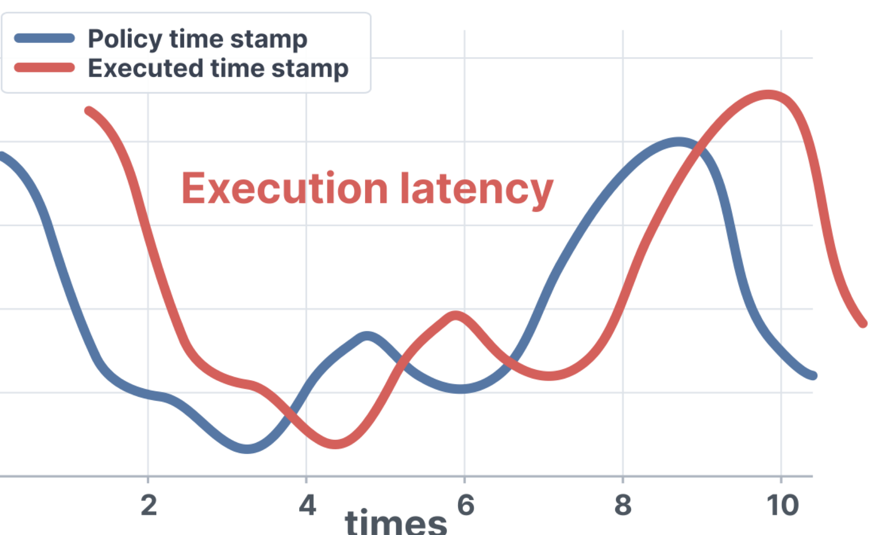
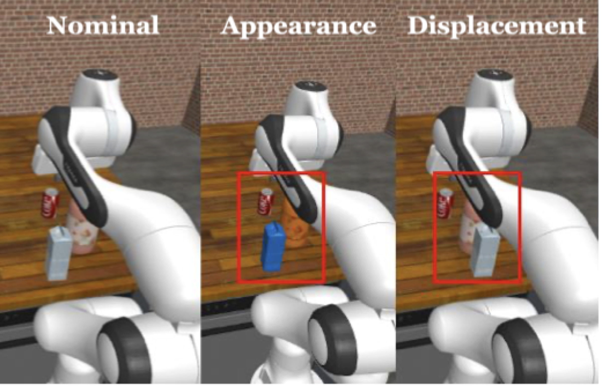
Every method starts from the same nominal task specification, uses its native training procedure and prescribed budget, and is then frozen and evaluated on the same shift grid. Five training seeds and twenty paired evaluation episodes per condition; scores are aggregated across severities within an axis and then across seeds, so denser axes receive no extra weight.
S(R̄) = 100 (R̄ − Rmin) / (Rmax − Rmin), with one fixed task-level reference pair shared by every method, dataset quality and condition.
Severity is reported in quartiles of each ladder's own length, so comparison is within a channel's ladder rather than on a scale shared across axes.
Aggregate distributions across training seeds rather than treating evaluation episodes as independent runs; paired per-seed differences are used whenever a mechanism is compared with its backbone.
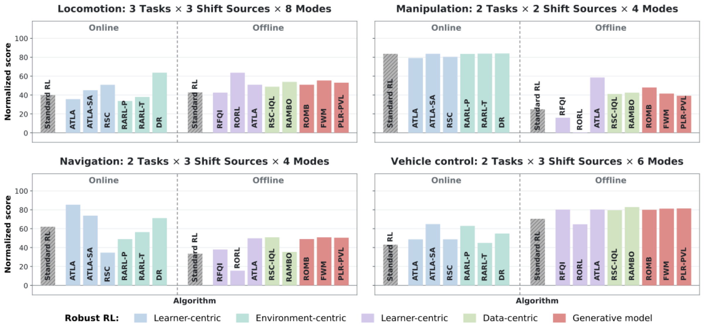
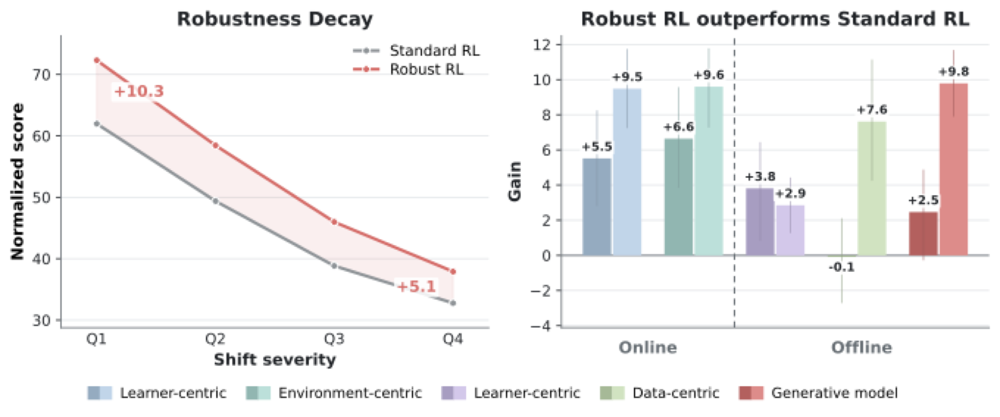
Method-specific robustness is measured through isolated channel sweeps across multiple perturbation modes, and through reference-derived compound shifts: Hopper adapts the coupled physical, actuation, force and delay factors of OmniH2O, while Pusher adapts the dynamics, observation and control-rate factors of Peng et al., with goal displacement labelled separately.
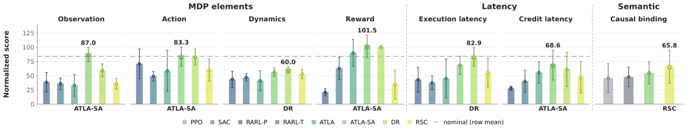
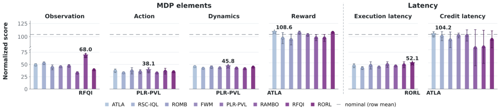
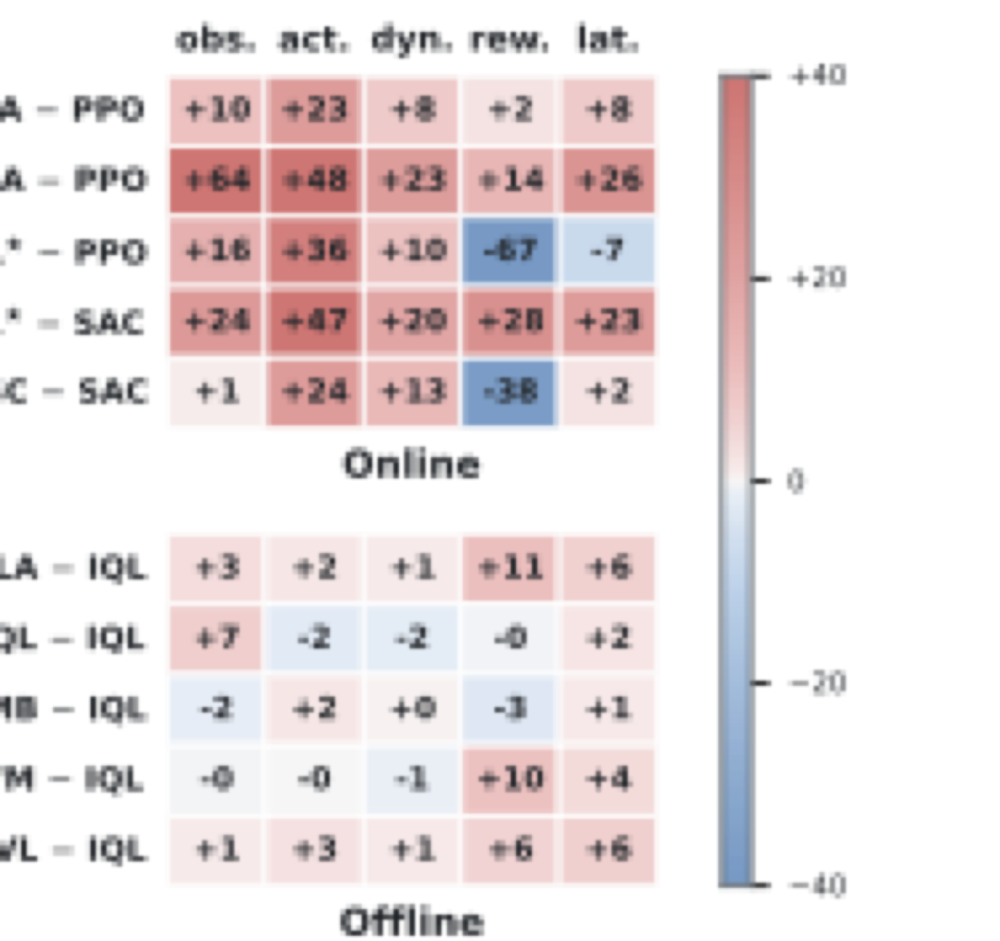
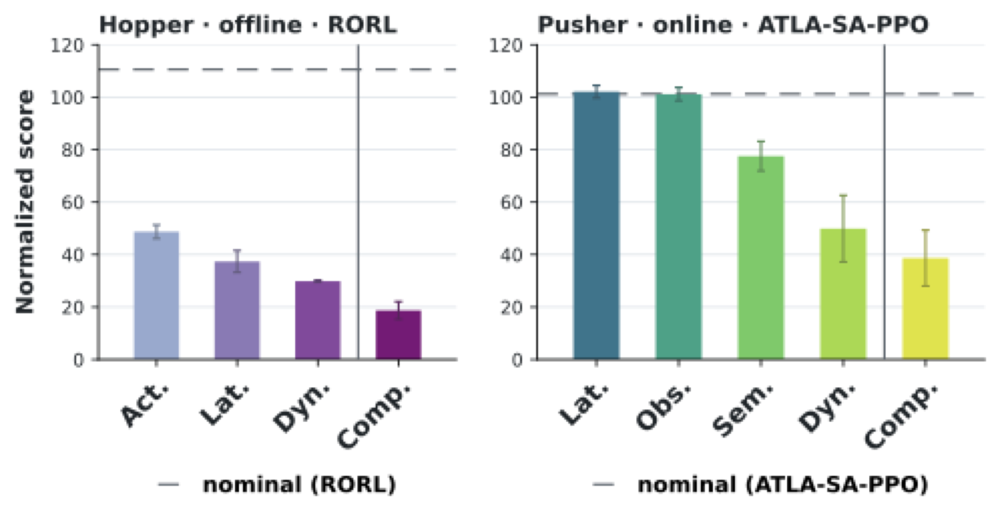
The same disruption interface is attached through task-specific adapters to a high-dimensional humanoid, a contact-rich manipulator in Isaac Lab, and a vision–language–action policy fine-tuned on bimanual demonstrations. On G1 the two highest-scoring policies survive about a quarter of delayed episodes; on the Franka drawer, DR-PPO matches SPiDR's success rate while no episode stays inside the joint-limit cost budget, against 84% for SPiDR. Only SPiDR-PPO keeps both metrics high on both tasks — higher performance alone is not evidence that a method is ready for sim-to-real deployment.
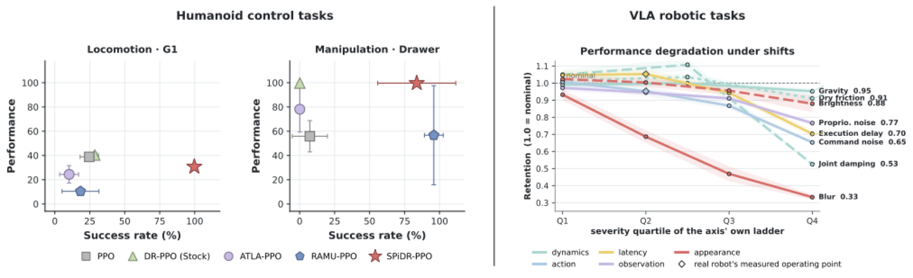
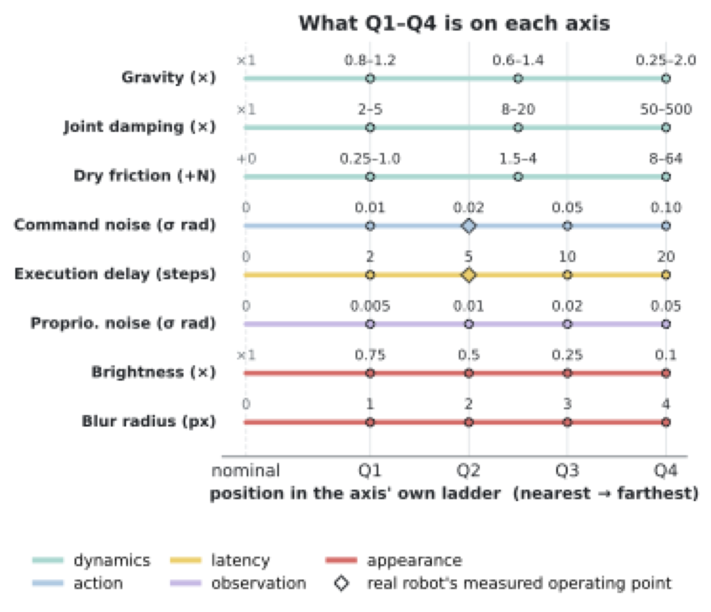
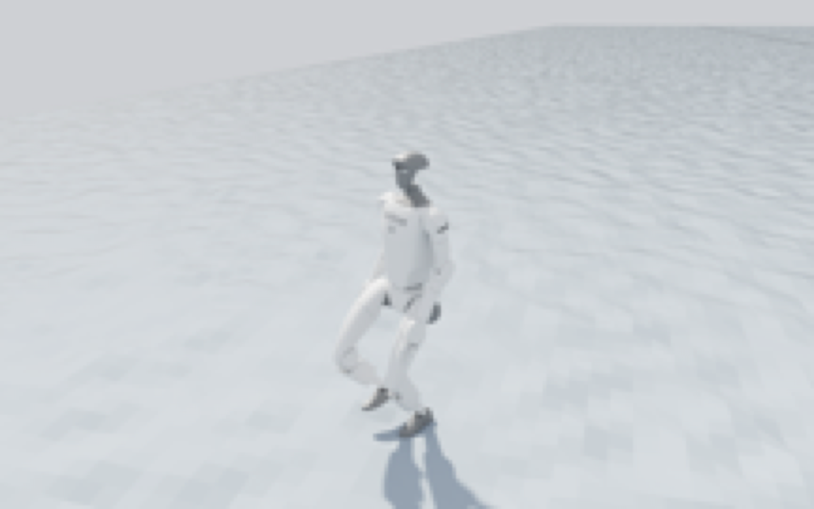
Under one protocol, robust methods as a group outperform standard references — but the picture is not uniform, and the shift a method claims is a poor predictor of the shift it actually defends.
Taken together: evaluating dexterous, high-dimensional control needs more than one task or one configuration. Shift channel, mode, severity, dataset quality, task family and base learner each expose different capabilities and limits of current methods, which makes a shared library and a common protocol the precondition for knowing what a robust RL algorithm actually buys.
The library-wide grid spans locomotion, manipulation, navigation and vehicle control; two additional tasks supply the compound-profile and semantic-channel tests. Robust safe methods enter on the advanced robotics tasks, which also demonstrate the extensibility of the disruptor interface.
| Task | Observation | Action (rate) | Horizon | Task type |
|---|---|---|---|---|
| Standard control | ||||
| Hopper-v5 | 11-D state | 3-D | 1,000 | Locomotion |
| Walker2d-v5 | 17-D state | 6-D | 1,000 | Locomotion |
| HalfCheetah-v5 | 17-D state | 6-D | 1,000 | Locomotion |
| AdroitHandDoor-v1 | 39-D state | 28-D | 200 | Manipulation |
| FetchReach-v4 | 13-D proprioception + relative goal | 4-D | 50 | Manipulation |
| Pusher-v5 | 23-D state | 7-D | 100 | Manipulation |
| DoorCausal | State | — | 300 | Manipulation |
| PointMaze_UMaze-v3 | 6-D state + desired goal | 2-D | 300 | Navigation |
| PointMaze_Open-v3 | 6-D state + desired goal | 2-D | 300 | Navigation |
| CarRacing-v3 | 96 × 96 × 3 pixels | 3-D | 1,000 | Driving |
| LunarLanderContinuous-v3 | 8-D state | 2-D | 1,000 | Driving |
| Advanced robotics | ||||
| Unitree Go2 | 48-D state | 12-D (50 Hz) | 1,000 | Locomotion |
| Unitree G1 | 123-D state | 37-D (50 Hz) | 1,000 | Locomotion |
| Franka Drawer | 31-D state | 8-D (60 Hz) | 480 | Manipulation |
| insert-mouse-battery | 14-D joint state + three 180×320×3 camera streams | 14-D (60 Hz) | Demo | Bimanual manipulation |
Benchmark tasks. Observation and action specify the default policy interface; control rates are shown in parentheses where reported. Numeric horizons are the maximum number of environment steps per episode, while Demo follows the length of the recorded demonstration used for VLA evaluation.
medium-v0, collected in Gymnasium v5 environmentsD4RL/door/expert-v2, Minari port of D4RL trajectoriesD4RL/pointmaze/open-v2, Minari port of D4RL trajectoriesEach dataset contains approximately one million transitions.
All tasks are exposed through standard Gymnasium single-agent and PettingZoo multi-agent interfaces and integrated with Stable-Baselines3, RLlib and TorchRL, so an external algorithm can be evaluated without rewriting its training loop. PPO and TRPO (on-policy) and SAC (off-policy) serve as the standard references throughout the experiments, alongside IQL, TD3+BC, MOPO and SynthER in the offline track.
One interface for training, one for declaring a shift, and one for evaluation. The snippets below sketch the workflow; the released code, configuration files and evaluation records follow the same structure.
Wrap an existing trainer so its mechanism, claimed shift and base algorithm are recorded as metadata and its update stays native.
Build the environment by wrapping a standard task with an ordered list of ShiftSpec objects — one channel, one mode, a graded severity, an optional schedule and a seed.
Train under the nominal specification, freeze the policy, and evaluate it on the same grid for every method, with paired episode seeds and a predeclared checkpoint rule.
# A deployment condition is one parameter vector, declared channel by channel. from robustrllib import make_shifted_env, ShiftSpec specs = [ # theta^p — a randomised physical parameter, drawn once per reset ShiftSpec(channel="dynamics", mode="loguniform", param="mass", severity=[0.7, 1.4], resample="per_reset"), # theta^o — an adversarial observation perturbation at an L-infinity radius ShiftSpec(channel="observation", mode="adversarial", severity=0.10, resample="per_step"), # theta^tau — an interpolated observation delay of 4 control steps ShiftSpec(channel="latency", mode="interp", param="obs_delay", severity=4, resample="per_episode"), ] env = make_shifted_env("Hopper-v5", specs, seed=0)
# L1 / L2 / L3 nest progressively: L1 is theta^p only, L3 adds the timing channel # together with a time-varying schedule g(t; phi). from robustrllib import scenario, evaluate env = scenario("L3", "Unitree-G1", schedule="drift") report = evaluate( policy, env, nominal=True, # include the unshifted condition severities="quartiles", # report Q1-Q4 of this ladder's own length episodes=20, seeds=5, # 5 training seeds x 20 paired episodes checkpoint="exact_last", # predeclared rule, logged in the run manifest ) print(report.normalized_score) # S(R) = 100 (R - R_min) / (R_max - R_min) print(report.paired_gain_over_base) # gain over the method's own backbone
Code, trained policies and the full evaluation records are released with the benchmark; the API names shown here mirror the released package layout.
@inproceedings{robustrllib2027,
title = {RobustRLlib: A Unified Library and Benchmark for
Robust Reinforcement Learning Algorithms},
author = {Anonymous Authors},
booktitle = {Submitted to the International Conference on
Learning Representations (ICLR)},
year = {2027},
note = {Under review}
}
Author names and affiliations are replaced by an anonymous placeholder during double-blind review.